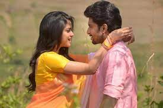

Babu is a college graduate with a carefree attitude, who makes an exam supervisor help him pass the exam. After completing his exam, Babu falls for his classmate Keerthy and pursues her to accept his love. After many attempts, Keerthy falls for Babu after he helps her friend Paddu reunite with her fiancé. However, Babu's happiness is short-lived when he learns that Keerthy is engaged to SI Siddharth Varma.
Siddhu had fell in love with Keerthy and meets her father, who tells Siddhu to achieve something in life. After getting selected as the SI. Keerthy's father agrees to the proposal. Keerthy tells Babu to make her father accept him as his son-in-law. However, trouble ensues where it is revealed that Keerthy's father is the same exam supervisor, who rejects him due to his carefree nature. Keerthy helps Babu to apply for a job, but Babu refuses which leads Keerthy to breakup with Babu.
On the day of the wedding, The bride's father (Paddu's fiancé's ex father-in-law) arrives and demands to call his son-in-law. Siddhu and Babu arrive where the bride's father aims a shotgun at Babu to kill him. In front of his impending death, Babu convinces the bride's father that his daughter could never be happy after her marriage because his daughter's fiancé loved Paddu. Keerthy's father criticize Babu's speech and taunts to shoot himself.Babu shoots himself with the bride's father's shotgun and gets severely injured where he is rushed to the hospital and Keerthy's father is convinced about Babu and Keerthy's relationship and accepts.
Few months later, Babu and Keerthy completes their graduation where they get married. Babu participates in local elections and gets elected as the Corporator with huge majority of his constituency, while Siddhu asks his father to find out if his would-be doesn't have a boyfriend like Babu